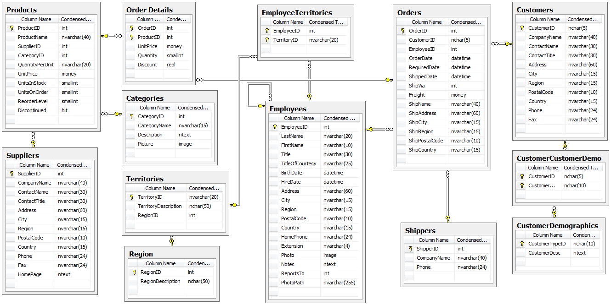

1. התקנת SQL Server 2025 Express
שרת מסד הנתונים · גרסה חינמית · Windows 10/11
- נכנסים לדף ההורדות של מיקרוסופט: microsoft.com/sql-server/sql-server-downloads, ובאזור Express לוחצים Download now.
- מריצים את הקובץ שירד (
SQL2025-SSEI-Expr.exe) ובוחרים בסוג ההתקנה Basic. - מאשרים את תנאי הרישיון (Accept), משאירים את תיקיית ההתקנה המוצעת ולוחצים Install.
- ממתינים לסיום ההורדה וההתקנה (כמה דקות). במסך הסיום מופיע שם השרת, בדרך כלל
localhost\SQLEXPRESS. כדאי לרשום אותו.
במסך הסיום יש כפתור Install SSMS. הוא פותח את דף ההורדה של כלי הניהול, השלב הבא.
2. התקנת SQL Server Management Studio 22
הכלי הגרפי שבו כותבים ומריצים שאילתות
- נכנסים ל-learn.microsoft.com/ssms/install/install ומורידים את SSMS 22 (הקובץ
vs_SSMS.exe). - מריצים את הקובץ. נפתח Visual Studio Installer; משאירים את ברירת המחדל ולוחצים Install.
- בסיום פותחים את SSMS מתפריט Start (מקלידים SSMS). בפתיחה הראשונה אפשר לדלג על ההתחברות לחשבון מיקרוסופט.
- בחלון Connect to Server: Server type = Database Engine, Server name =
localhost\SQLEXPRESS, Authentication = Windows Authentication. אם מופיעה שגיאת תעודה, מסמנים Trust Server Certificate. לוחצים Connect.
מומלץ להצמיד את SSMS לשורת המשימות: נשתמש בו בכל שיעור.
3. שחזור מסד הנתונים Northwind
מסד הנתונים שאיתו עובדים בכל הקורס
⬇ הורדת northwind.bak- מעתיקים את הקובץ לתיקייה פשוטה, למשל
C:\SQLBackups(תיקיית ההורדות לפעמים חסומה לשרת). - ב-SSMS, בחלון Object Explorer: קליק ימני על Databases ← Restore Database…
- תחת Source מסמנים Device, לוחצים על … ← Add ← בוחרים את
northwind.bak← OK. - בעמוד Files (בצד שמאל של החלון) מסמנים Relocate all files to folder. הקובץ נוצר במחשב אחר, ובלי הסימון הזה השחזור נכשל על נתיב שלא קיים.
- לוחצים OK. אחרי ההודעה Database 'Northwind' restored successfully מרעננים (F5) את Databases ומופיע המסד Northwind.
- בודקים: New Query, בוחרים את Northwind ברשימת המסדים, ומריצים
SELECT * FROM Customers;
אם מתקבלת שגיאה על גרסה: קובץ גיבוי אפשר לשחזר רק לגרסת שרת שווה או חדשה יותר. עם SQL Server 2025 אין בעיה.
סרטון הדגמה: שחזור קובץ גיבוי
אותם שלבים, צעד אחר צעד
תרשים מסד הנתונים Northwind
הטבלאות והקשרים ביניהן
⬇ הורדת התרשים
דף פקודות SQL
ריכוז הפקודות של הקורס בתחביר SQL Server (T-SQL)
| פקודה | מה היא עושה | דוגמה |
|---|---|---|
| שליפה | ||
| SELECT … FROM | אילו עמודות לשלוף ומאיזו טבלה | SELECT FirstName, LastName FROM Employees; |
| WHERE | סינון שורות לפי תנאי | WHERE Country = 'USA' |
| DISTINCT | ביטול שורות כפולות בתוצאה | SELECT DISTINCT Country FROM Customers; |
| AS | כינוי (Alias) לעמודה או לטבלה | SELECT UnitPrice * 0.9 AS SalePrice |
| TOP | רק N השורות הראשונות | SELECT TOP 5 * FROM Products ORDER BY UnitPrice DESC; |
| ORDER BY | מיון: ASC עולה (ברירת מחדל), DESC יורד | ORDER BY Country, City DESC |
| אופרטורים | ||
| = <> < > <= >= | השוואה (<> וגם != = שונה מ-) | WHERE UnitPrice >= 20 |
| AND / OR / NOT | שילוב תנאים; AND קודם ל-OR, לכן כדאי סוגריים | WHERE (City = 'London' OR City = 'Paris') AND Fax IS NOT NULL |
| BETWEEN | טווח, כולל הקצוות | WHERE UnitPrice BETWEEN 10 AND 50 |
| IN | אחד מתוך רשימה (קיצור ל-OR) | WHERE Country IN ('UK', 'France') |
| LIKE | % = כל רצף תווים, _ = תו אחד | WHERE CompanyName LIKE 'A%' |
| IS NULL / IS NOT NULL | בדיקת ערך חסר (לא = NULL!) | WHERE Region IS NULL |
| פונקציות | ||
| COUNT / SUM / AVG / MIN / MAX | פונקציות צבירה | SELECT COUNT(*), AVG(UnitPrice) FROM Products; |
| UPPER / LOWER / LEN | אותיות גדולות/קטנות, אורך מחרוזת | SELECT UPPER(LastName), LEN(LastName) |
| SUBSTRING / LEFT / RIGHT | חלק ממחרוזת | SUBSTRING(City, 1, 4) |
| REPLACE / LTRIM / RTRIM | החלפה וניקוי רווחים | REPLACE(City, 'London', 'Londinium') |
| ROUND / CEILING / FLOOR | עיגול מספרים | ROUND(UnitPrice, 2) |
| GETDATE / DATEADD / DATEDIFF | תאריך נוכחי, הוספה והפרש | DATEDIFF(DAY, OrderDate, ShippedDate) |
| YEAR / MONTH / DAY / DATENAME | חלקי תאריך | YEAR(OrderDate), DATENAME(MONTH, OrderDate) |
| ISNULL / CAST / CONVERT | ערך חלופי ל-NULL, המרת טיפוסים | ISNULL(Fax, N'אין'), CAST(UnitPrice AS INT) |
| קיבוץ | ||
| GROUP BY | קיבוץ שורות לפי ערך משותף | SELECT Country, COUNT(*) FROM Customers GROUP BY Country; |
| HAVING | תנאי על קבוצות (אחרי GROUP BY) | HAVING COUNT(*) > 5 |
| צירוף טבלאות | ||
| INNER JOIN | רק שורות עם התאמה בשתי הטבלאות | SELECT p.ProductName, c.CategoryName FROM Products p INNER JOIN Categories c ON p.CategoryID = c.CategoryID; |
| LEFT / RIGHT JOIN | כל השורות מטבלה אחת, ומהשנייה רק מה שמתאים | FROM Customers c LEFT JOIN Orders o ON c.CustomerID = o.CustomerID |
| FULL / CROSS JOIN | כל השורות משתי הטבלאות / מכפלה קרטזית | FROM Customers c FULL JOIN Orders o ON … |
| UNION | איחוד תוצאות של שתי שאילתות (UNION ALL משאיר כפולים) | SELECT City FROM Customers UNION SELECT City FROM Suppliers; |
| תת-שאילתה | שאילתה בתוך שאילתה | WHERE UnitPrice > (SELECT AVG(UnitPrice) FROM Products) |
| שינוי נתונים ומבנה | ||
| INSERT | הוספת שורה | INSERT INTO Shippers (CompanyName, Phone) VALUES ('Fast Ship', '03-5551234'); |
| UPDATE | עדכון שורות (בלי WHERE – כל הטבלה!) | UPDATE Products SET UnitPrice = 20 WHERE ProductID = 1; |
| DELETE | מחיקת שורות (בלי WHERE – כל הטבלה!) | DELETE FROM Shippers WHERE ShipperID = 4; |
| CREATE / ALTER / DROP TABLE | יצירה, שינוי ומחיקה של טבלה | ALTER TABLE Student ADD Email varchar(50); ALTER TABLE Student DROP COLUMN Email; |
| VIEW | שאילתה שמורה שמתנהגת כמו טבלה | CREATE VIEW UK_Customers AS SELECT * FROM Customers WHERE Country = 'UK'; |
| PROCEDURE | קוד שמור שמריצים בשם | CREATE PROCEDURE GetEmployees AS SELECT * FROM Employees; EXEC GetEmployees; |
פונקציות מהדף הישן כמו
FIRST(), LAST(), UCASE() ו-NOW() לא קיימות ב-SQL Server. במקומן: TOP עם ORDER BY, UPPER() ו-GETDATE().